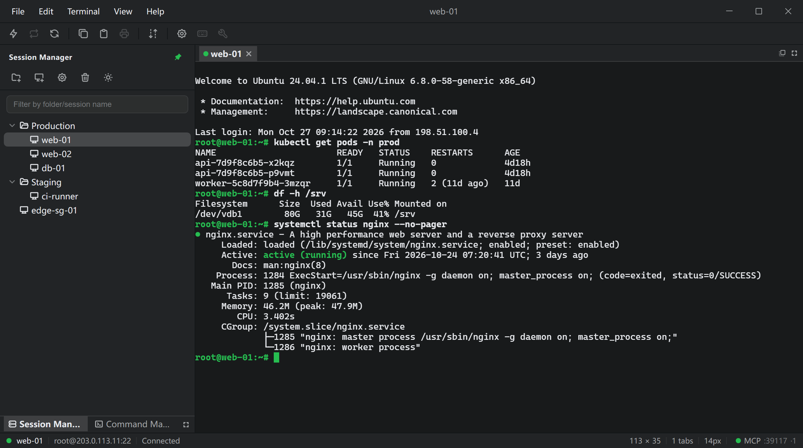
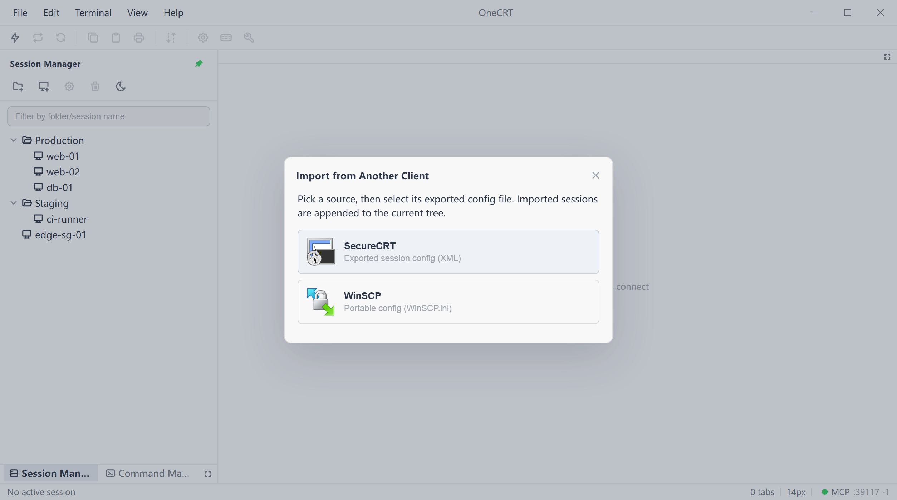
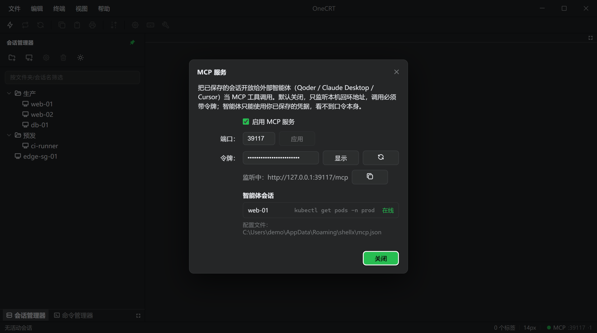
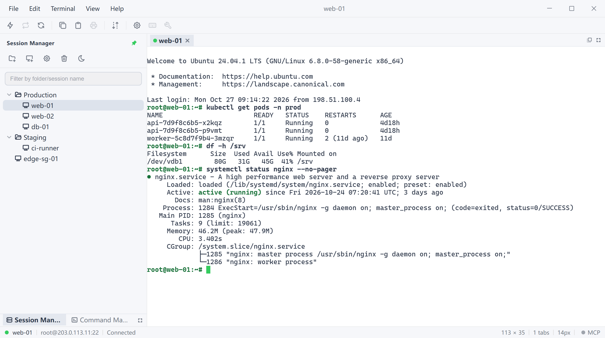

Quick connect, four auth methods
Protocol, host, port and username on one screen. Public key, keyboard-interactive, password and GSSAPI are tried in your order, and a failure names the method that did not pass.
Session tree, tabs, command library and SFTP in one window. SecureCRT and WinSCP configs come across whole, nothing lost. Tauri 2 + Rust, 3.7 MB, no Electron - plus an MCP server for agents.

The layout follows the Session Manager / Quick Connect / Command Manager arrangement; the keyboard and the context menus both reach every action.
Four workflows below: connect, migrate, hand it to an agent, pick a colour scheme.
Sessions sit in a folder tree; double-click connects. Cut, copy, paste, rename and properties live in the context menu. The tree is persisted as JSON and comes back exactly as you left it.
File - Import from Another Client reads a SecureCRT session export or WinSCP.ini and appends the sessions with their folder hierarchy, so nothing has to be rebuilt host by host.

Turn it on and OneCRT serves Streamable HTTP MCP on this machine, exposing saved sessions as tools: list, exec, send, read and close. The agent works in a real terminal.

Colour tokens live in one place; the interface and the terminal read the same variables. Switching moves foreground, background, cursor, selection and the ANSI palette together - the frame is not the only thing that changes.

Protocol, host, port and username on one screen. Public key, keyboard-interactive, password and GSSAPI are tried in your order, and a failure names the method that did not pass.
The display name is stored separately from the text that is sent, multi-line included. Double-click sends to the current terminal, or broadcast to every ready session or only the visible one.
Local and remote panes side by side, with progress and a transfer list. Files move over the SSH session you already have, so there is no second client to keep open.
A disconnect gives one clear message; press Enter to reconnect. No guessing games with silent auto-retry - idle timeouts are held off by SSH keepalive.
Check for updates under Help - About. Windows and Linux AppImage upgrade themselves; macOS needs a signed build, so download the dmg and replace.
Windows x64, macOS Apple Silicon and Linux x86_64 are built by the same GitHub Actions workflow, with matching versions, update feed and checksums.
The palette comes from the two greens in the app icon; body and interface colours are checked against WCAG AA.
The terminal's ANSI red, yellow and green were tuned separately so Chinese error output stays readable on dark.
No account system and no server. Sessions and passwords are written only to the app data directory on this machine.
MCP is off by default, binds 127.0.0.1 only, and checks a token on every request.
On Windows, passwords go through the system DPAPI before they hit disk. Other platforms have no portable system key store - keep the data directory on an encrypted volume.
The MCP server binds 127.0.0.1 on a configurable port. Every request must carry Authorization: Bearer <token>, and the token can be rotated.
An agent can only use credentials you already saved - it never receives or sees them. Turning the switch off also tears down any shell the agent left behind.
Apart from SSH connections you start and latest.json when checking for updates, nothing leaves the app. This page is static and loads no tracking scripts either.
File - MCP Server... once enabled, OneCRT serves Streamable HTTP MCP at
127.0.0.1:39117/mcp (port configurable) and exposes saved sessions as six
tools.
Copy the config from the dialog straight into Qoder, Claude Desktop or Cursor.
sessions_list, terminals_list, exec, send, read, close
The copy button hands you a config you can paste straight into a client:
{
"mcpServers": {
"onecrt": {
"type": "http",
"url": "http://127.0.0.1:39117/mcp",
"headers": { "Authorization": "Bearer <your token>" }
}
}
}The migration path at the SSH layer is kept: configs come across, and agents call tools on the same sessions.
Installers and checksums live on GitHub Releases - download directly, no account, no feature limits.
Windows and Linux AppImage update in place; macOS needs a manual dmg for now.
Windows 10 / 11 · x64
shellx-0.2.0-windows-x64-setup.exe
about 3.7 MB · NSIS installer
Download for WindowsmacOS 12 or later · Apple Silicon
shellx-0.2.0-macos-arm64.dmg
about 4.9 MB · unsigned, right-click → Open the first time
Download for macOSx86_64 distributions
shellx-0.2.0-linux-x64.deb · shellx-0.2.0-linux-x64.AppImage
deb about 6.2 MB · AppImage about 84.6 MB
Installer file names still use the shellx prefix, which is also the local data directory name; the app calls itself OneCRT. Windows and Linux (AppImage) support in-app updates; macOS needs a Developer ID signature for Tauri's updater, so download the dmg for now. All artifacts and SHA256
No and no. Installers come straight from GitHub Releases, every feature is included, and there is no trial period or paid tier.
Password, public key (OpenSSH private keys, with ~ expansion), keyboard-interactive and GSSAPI. A session can hold several methods tried in order, and a failure reports the specific reason rather than a generic "cannot connect".
Only in the app data directory on your machine; nothing is uploaded. On Windows passwords are encrypted with the system DPAPI before they hit disk. Other platforms have no portable system key store, so passwords are stored in plaintext in the same session file - keep that directory on an encrypted volume.
Help - About OneCRT... shows the exact path, with an Open button that takes you there.
Yes. File - Import from Another Client reads a SecureCRT session export (XML) or WinSCP.ini, and appends the parsed sessions together with their folder hierarchy.
Neither config format carries a usable plaintext password, so imported sessions ask for credentials on first connect. SecureCRT and WinSCP are trademarks and products of their respective owners; OneCRT is not affiliated with them.
Windows x64 (NSIS installer), macOS 12 or later on Apple Silicon (dmg), and Linux x86_64 (deb and AppImage). All three come off the same GitHub Actions pipeline.
The macOS build is not signed with a Developer ID certificate or notarised. Right-click the app in Finder and choose Open the first time, or allow it under System Settings - Privacy & Security.
When enabled, OneCRT serves Streamable HTTP MCP on 127.0.0.1 and exposes your saved sessions as tools to agents such as Qoder, Claude Desktop and Cursor.
It is off by default, binds to loopback only, and every request must carry a Bearer token. Agents can only use credentials you already saved - they never receive or see the passwords themselves.
There is no analytics or telemetry. Apart from SSH connections you start, the only network traffic is reading latest.json from GitHub Releases when you check for updates. This website is static and loads no tracking scripts either.
A 3.7 MB installer, next-next-finish. No sign-up and no online activation.